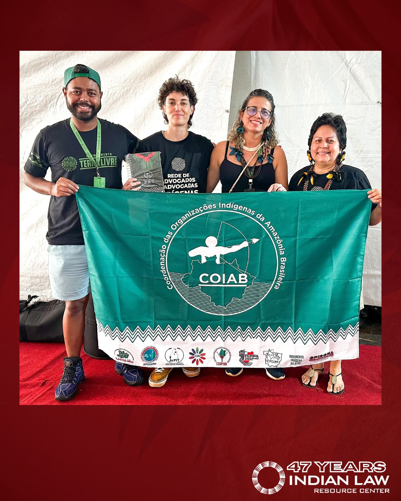

The Indian Law Resource Center is a nonprofit law and advocacy organization established and directed by Indigenous people with the main goal of preserving the well-being of Indian and other Native nations or tribes by providing free legal assistance. Founded in 1978 by Robert T. Coulter to confront the glaring gap in justice for Indigenous communities across America, which had no public interest organization willing to fight for their rights in court. Their work spans from protecting Indigenous lands and natural resources, defending human rights and cultural heritage, ending violence against Native women, and advocating for environmental justice across the Americas. Notably, they played a leading role in securing rights for many Indigenous communities through the adoption of the United Nations Declaration on the Rights of Indigenous Peoples. Today, the center operates across 4 regions around the world with 29 ongoing projects after 45 years of service, providing legal assistance to all Indigenous people throughout the Americas for free. The Center works alongside key partner organizations to expand its impact. Domestically, it works closely with the National Congress of American Indians and the National Indigenous Women's Resource Center to address violence against Native women and strengthen policy efforts. Internationally, it collaborates with groups like COIAB, APIB, and AIDSEEP to support indigenous land rights, protect community leaders, and advocate for environmental preservation throughout South America. They also hold NGO consultative status with the United Nations Economic and Social Council, giving them a voice in global human rights discussions.
The Indian Law Resource Center addresses one of the overlooked human rights crises in the United States, violence against Native Women in tribal lands and in Alaska Native Villages. More than 4 in 5 American Indian and Alaska Native Women experienced violence in their lifetime, and more than 1 in 2 have experienced sexual violence.
For more than 35 years, the United States law has stripped Indian nations of all criminal authority over non-Indians, meaning the tribal nations could not prosecute non-Indians who reportedly commit 96% of sexual violence against Native Women. In fact, between 2005 and 2009, US attorneys refused to prosecute 67% of Indian country matters referred to them involving sexual abuse.
However, the Indian Law Resource Center fought to protect Native Women by partnering with Congress, and they secured the 2013 reauthorization of the Violence Against Women Act, which is a landmark victory because it allows tribal nations to prosecute non-Native offenders who have committed crimes in the tribal lands and keep them accountable. They also brought the crisis before the United Nations and the Organization of American States and pressured the U.S. to act. And through their Safe Women, Strong Nation Projects, they provide tribal nations and Native women's organizations with training, legal assistance, and support to build the capacity to investigate, prosecute, and punish those who commit crimes against women.
The Center's Safe Women, Strong Nation project partners with Native women's organizations and Alaska Native nations to end violence against Native women and girls across America by providing free legal assistance, policy advocacy, and on-the-ground support to communities that have been failed by the legal system for decades.